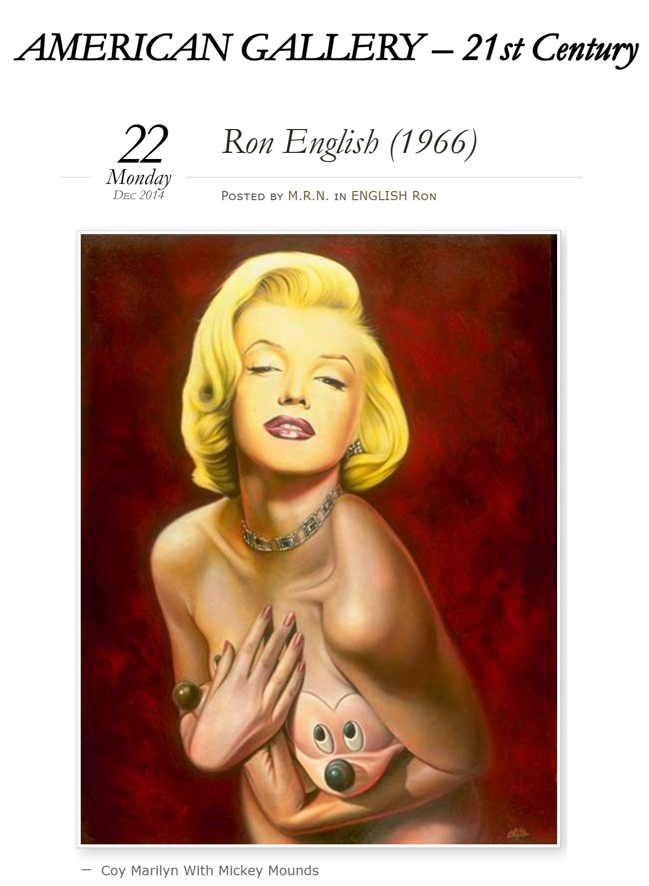

Exhibitions
The ADAM and RON Show, Elms Lesters Painting Rooms, London, UK, May 3–30, 2008.
The Adam and Ron Show, Elms Lesters Painting Rooms, London, UK, April 4–May 31, 2008.
Literature
Ron English, Death and the Eternal Forever (Korero Press, 2014), p. 156. ISBN 978-0957664920.

Ron English, Status Factory: The Art of Ron English (San Francisco: Last Gasp of San Francisco, 2014), p. 142. ISBN 978-0867197891.

The ELMS LESTERS Book. London: Elms Lesters Painting Rooms, 2008. Compiled and edited by Paul Jones and Fiona McKinnon; designed by Iain Cadby; foreword by Mike von Joel. Limited edition boxed hardcover, 1,000 copies. 502 pp. Reproduced on pp. 324–325.
The Adam and Ron Show. London: Elms Lesters Painting Rooms, 2008. Hardbound exhibition book, 72 pp.; over 60 full-color illustrations. Compiled by Fiona McKinnon; designed by Iain Cadby. Limited edition of 1,000 copies.

Notes
Also known as All Quiet on the Western Front.
Ancillary Documentation

